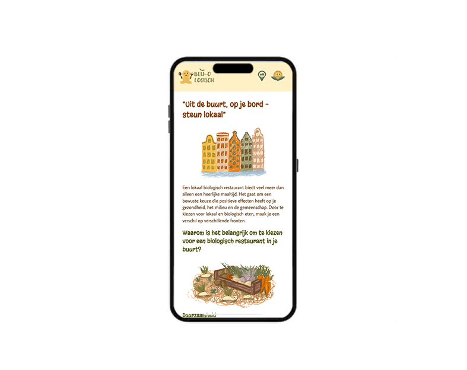
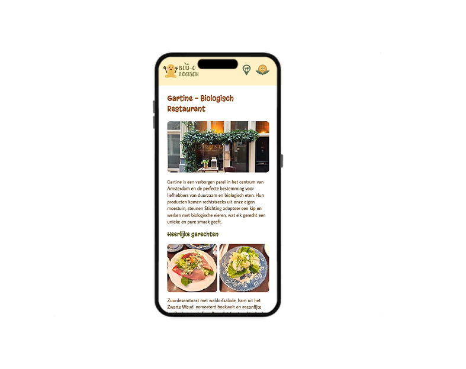
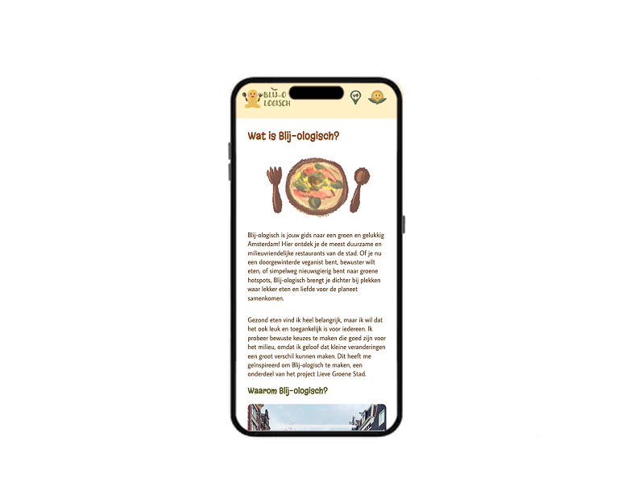

Gartine – De Lieve Groene Stad
Design & Development (Mobile Website)
View prototype ↗About this project
For the individual project “De Lieve Groene Stad”, I designed and developed a mobile-first website for an initiative in Amsterdam that supports a greener and more sustainable lifestyle.
I walked through Amsterdam to choose an initiative myself and selected Gartine, a biological and sustainably focused restaurant. I visited the location, ate there and photographed the dishes to use as content in my design.
I first created the full design in Figma, focusing specifically on mobile only UI. The assignment required designing for a small screen only, so the final coded version is not completely responsive.
After designing the layout, interactions and visual style, I built the mobile website using HTML and CSS.
Preview

